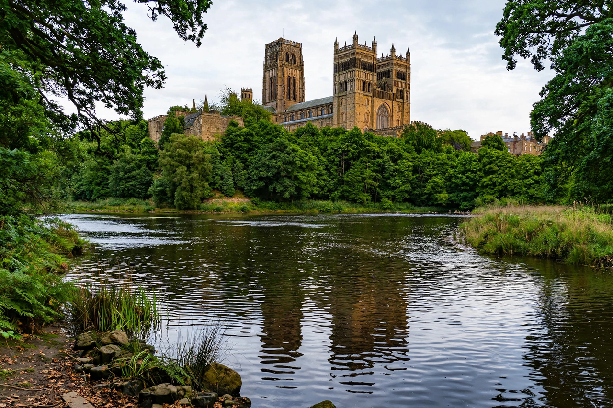

From Wikipedia, the free encyclopedia
| Durham Cathedral | |
| Full name | Cathedral Church of Christ, Blessed Mary the Virgin and St Cuthbert of Durham |
|---|---|
| Location | Durham, County Durham, England |
| Founded | 1093 (present building) |
| Style | Norman (Romanesque), early Gothic elements |
| Denomination | Church of England (Anglican) |
| Diocese | Durham |
| Heritage | UNESCO World Heritage Site (with Durham Castle, 1986) |
Durham Cathedral, formally the Cathedral Church of Christ, Blessed Mary the Virgin and St Cuthbert of Durham, is an Anglican cathedral in the city of Durham, England. Built between 1093 and 1133, it is regarded as one of the finest examples of Norman (Romanesque) architecture in Europe and houses the shrine of St Cuthbert and the tomb of the Venerable Bede. Together with the adjacent castle it forms a UNESCO World Heritage Site.

The see of Durham traces its origins to the community of St Cuthbert, which fled Lindisfarne before Viking raids and settled at Durham in 995, carrying Cuthbert's relics. The Anglo-Saxon "White Church" was replaced after the Norman Conquest by the present cathedral, founded by Bishop William de St-Calais in 1093. The building was innovative: its high ribbed vaults, pointed transverse arches, and flying buttresses (concealed in the triforium) anticipate Gothic architecture. The Galilee Chapel (c. 1170s) holds Bede's tomb; the Chapel of the Nine Altars was added in the 13th century.
Durham's bishops held palatinate powers — effectively ruling the county as a buffer against Scotland — until the 19th century. At the Reformation the monastery was dissolved and the cathedral refounded as an Anglican foundation. Scottish prisoners from the Battle of Dunbar (1650) were held in the cathedral and carved graffiti still visible today. In popular culture, the cathedral cloisters and chapter house served as filming locations for the Harry Potter films.
See also: Duchy of Normandy · Saint Cuthbert · Bede · Tower of London